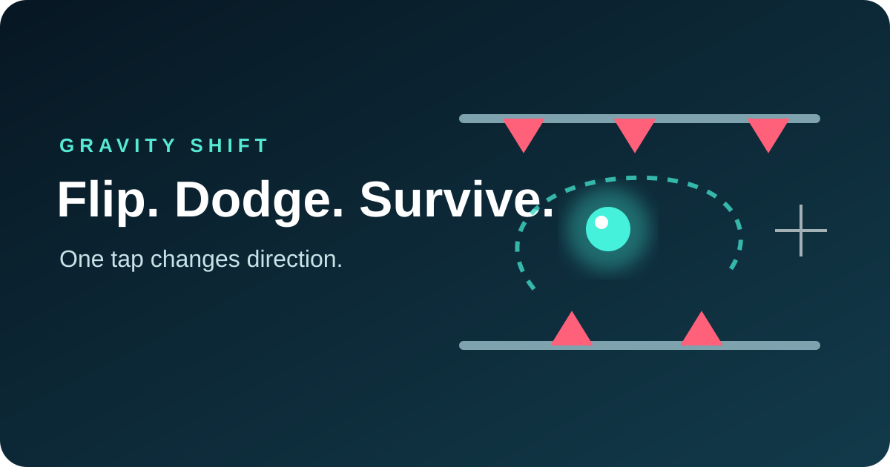

Gravity Shift – A Physics-Based Arcade Challenge
Reverse gravity, react to hazards, and guide an orb through an arcade course.

What if gravity was something you could use to solve challenges? Gravity Shift brings physics-based movement into an arcade experience. Instead of relying only on traditional movement, players change gravity to guide a glowing orb around hazards.
Tap or click to reverse gravity and move between the floor and ceiling. Time each change to avoid spikes, lasers, and moving barriers as you make your way through the course.
What Makes Physics-Based Games Interesting?
Physics-based games invite players to observe how movement and changing conditions affect progress. In Gravity Shift, attention, timing, and experimentation help you react to the route ahead.
- Physical interaction: Explore movement affected by gravity.
- Problem-solving: Consider how a change in direction affects your route.
- Experimentation: Try different timings to pass an obstacle.
- Timing: Choose when to reverse gravity.
- Learning through play: Adjust your approach as you encounter challenges.
How to Play Gravity Shift
- Open Gravity Shift on Crossworld.
- Read the instructions displayed in the game.
- Tap or click to reverse gravity and guide the orb.
- Observe the course and time your movement around obstacles.
- Keep refining your approach as you encounter new challenges.
Why Try Physics Arcade Games?
Physics-based arcade games connect movement and direction with interactive challenges. Rather than simply following a fixed path, players can react to what is ahead and experiment with timing. Gravity Shift adds this kind of movement challenge to a collection that also includes word puzzles and classic board games.
Frequently Asked Questions
What is Gravity Shift?
Gravity Shift is a physics-based arcade game where you reverse gravity to guide an orb around hazards.
Is Gravity Shift a puzzle game?
It combines arcade-style reflexes with physics-based movement and obstacle challenges.
Can I play Gravity Shift online?
Yes. Open its browser-based game page on Crossworld to play.
Where can I play Gravity Shift?
Visit the Gravity Shift game page to explore the game.
Challenge the Rules of Gravity
Think differently, experiment with movement, and discover a new arcade experience. Play Gravity Shift on Crossworld.